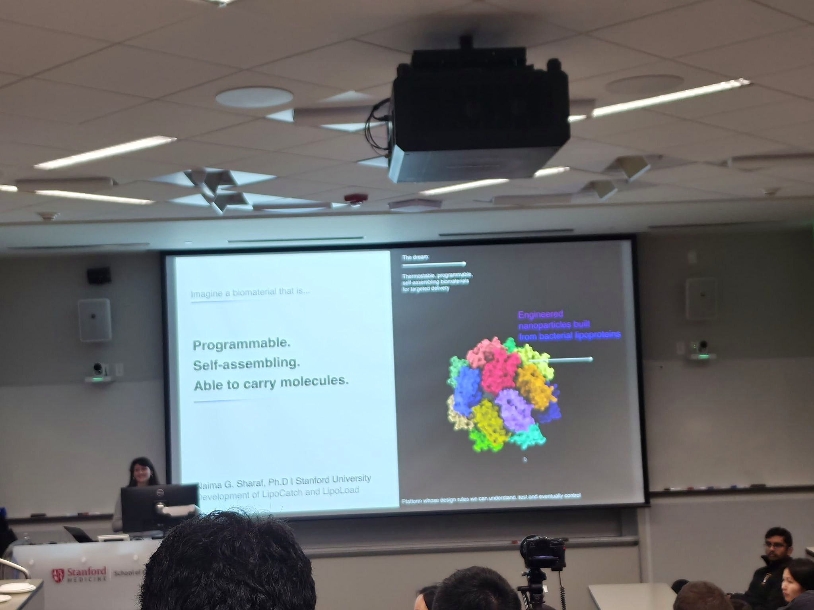
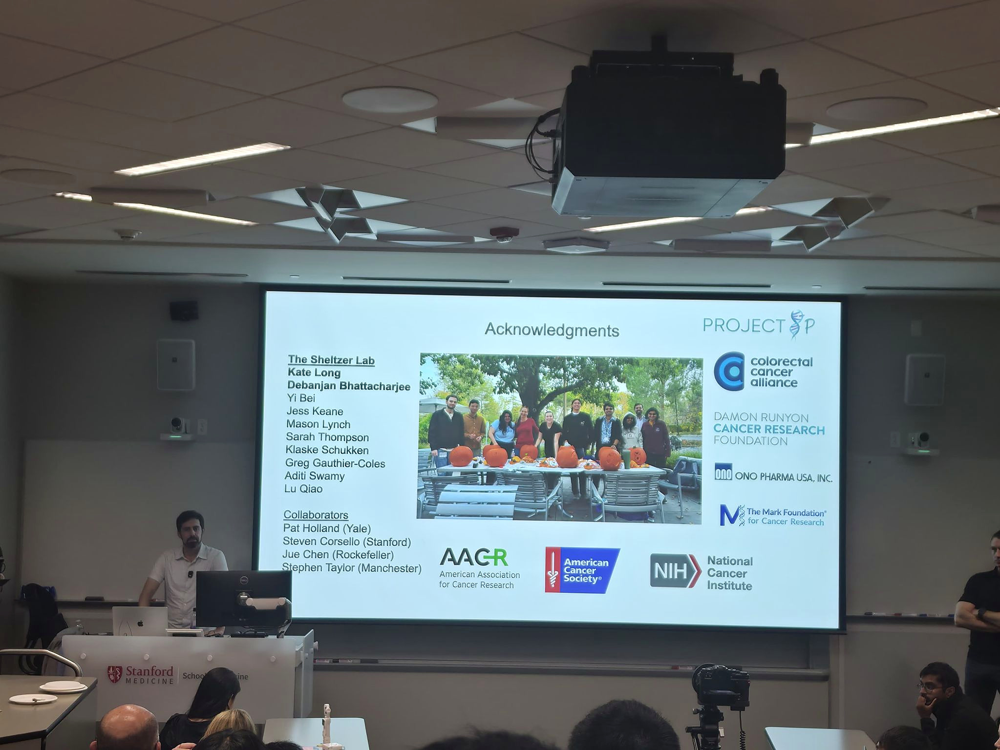
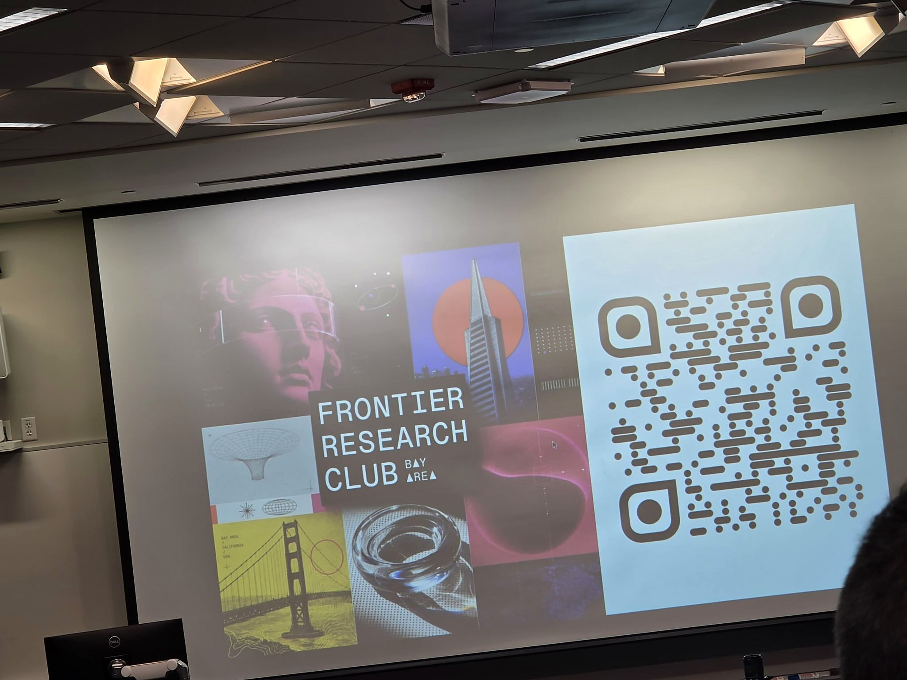

At Stanford Medicine: understanding biology to point it somewhere new
Reflections on an AI × Bio seminar with Naima Sharaf and Jason Sheltzer, and the connections between biological mechanisms, engineering, and AI.
Two very different biological systems. One powerful scientific move: understand the machinery precisely enough to point it somewhere new.
At a recent AI × Bio seminar at Stanford University School of Medicine, I heard from Prof. Naima Sharaf and Prof. Jason Sheltzer about two fascinating examples of this idea.
I last studied biology formally in Grade 10 before shifting my focus toward engineering, so I will not pretend that I followed every biochemical detail. However, seeing how researchers study biological mechanisms and transform that knowledge into new technologies was incredibly interesting.
From biological mechanisms to new tools
Prof. Naima Sharaf explained how her lab studies the lipoproteins that support nutrient acquisition and transport in Borrelia burgdorferi, the bacterium responsible for Lyme disease. That understanding has also enabled the lab to engineer new tools: LipoCatch provides a scaffold for attaching proteins, while LipoLoad packages molecular cargo.

Prof. Jason Sheltzer presented a different example involving MDR1, the drug-efflux pump that helps cancer cells expel chemotherapy. His team is investigating how that same resistance mechanism can be turned against cancer cells. As described in the talk, PAC-1 binds iron, and MDR1 exports the iron-bound molecule, progressively depleting intracellular iron and making MDR1-high cells selectively vulnerable.

The mechanism of resistance becomes the mechanism of attack.
Where AI enters the picture
The connection to AI became especially clear when Professor Sheltzer introduced CompoundVALET.ai. The multi-agent platform was presented as a way to search scientific literature, check references, and bring together genetic, biochemical, and biophysical evidence to investigate how drugs actually work and generate citation-supported reports.

I may not have understood every mechanism discussed, but I left with a much better appreciation for how AI, engineering, and biological research can complement one another—and with plenty of new questions to explore.
Thank you to Kristopher Floyd and the Frontier Research Club for bringing this conversation together at Stanford Medicine.